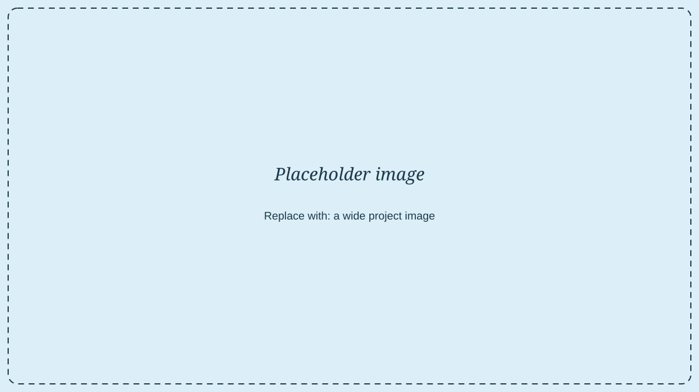
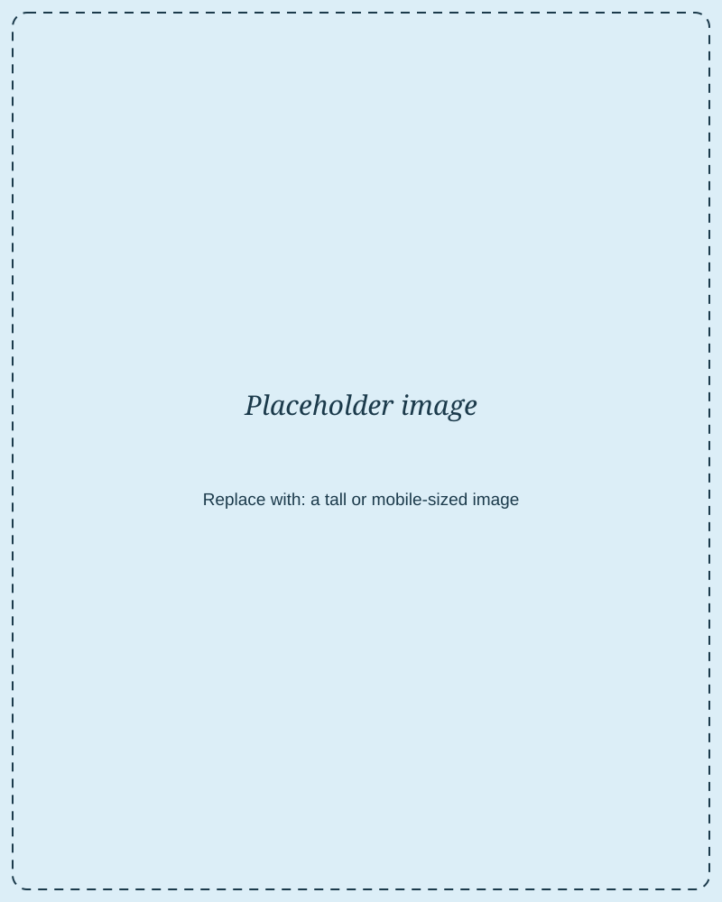

The challenge
[PLACEHOLDER] Set the scene: what was the problem, who was it a problem for, and why did it matter? A couple of warm, clear paragraphs work best.
[PLACEHOLDER] Add as many paragraphs as you like inside a text block.

Research & discovery
[PLACEHOLDER] What did you do to understand the problem? Interviews, surveys, usability tests? What did you learn that surprised you?

The solution
[PLACEHOLDER] Walk through what you designed and the key decisions behind it. Pair this with image blocks above and below.
Outcome & reflections
[PLACEHOLDER] What happened as a result? What would you do differently? Recruiters love an honest reflection.